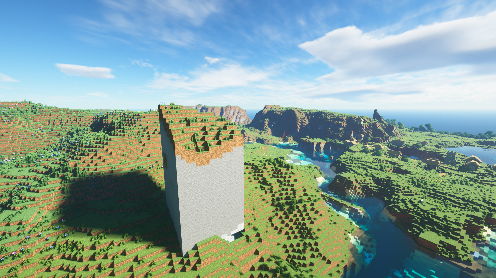

Название
Своё название сервер майнкрафт ХЫСЬ получил вслед за сервером дискорда. Это название
использовали друзья админа сервера, как название своей компании. Ранее один из членов данной группа друзей (женского пола)
взял это слово из словарного запаса пользователя тик ток.
Самый старый файл
Самым старым файлом сервера ХЫСЬ является icon.png, он был создан в момент создания сервера (20.06.2022 1:51) и не обновлялся.
Подоконник админа
Сервер расположен в квартире админа на подоконнике в его комнате.
-1647703831772432530
-1647703831772432530 это сид мира сервера ХЫСЬ.
1.16.5
1.16.5 это версия майнкрафт на которой начал своё существование сервер ХЫСЬ.
Баг чанк
Игрок SnusMage обнаружил около своего дома странное явление, чанк выходил из земли как будто его выдвинули.
Причину этого бага до сих пор не нашли. Это не может быть связано с переходом между версиями, так как этот чанк был
впервые прогружен вместе с соедними на одной и тоже версии игры, соседние чанки обычные. Было принято не исправлять
эту анамалию, так как она не мешает игре и уже стала местной достопримечательностью.

Список форбс
Раньше планировалось сделать список форбс на сервере, в котором были бы перечисленны игроки по уровню своего
богатства, которое предпологалось измерять в совокупности владений игрока. Эту идею забросили и всё, что осталась
от неё это книга в главной базе с описанием списка и кучей анекдотов.
Tortik
Tortik это игрок сервера, который продержался около 40 минут, прежде чем его забанили. Причиной бана
является то, что он... он просто не понравился игрокам. (Также возможно он имел связи с феминистками)
Авто печка
Игрок Andruxa построил у себя дома автаматическую печку с бесконечным топливом на бамбуке, способную плавить
около 18000 блоков в секунду. Бамбук это единственный вид топлива для печки который можно автоматически собирать с
фермы и перемещать в печку, все остальные виды требуют вмешательства человека. Так как бамбук очень плохой вид
топлива (нужно четыре единицы на одну переплавку) пришлось строить огромную ферму в подвале дома. В итоге бамбук
это самый неисчерпаемый ресурс на сервере.
Тюрьма
Игрок Hesoyameii построил у себя в замке тюрьму. В ней есть несколько камер, подсобка, душевая (советую
не ронять там мыло), столовая, КАЧАЛКА, карцер, и кабинет "диктатора". Ходят слухи, что тайные ходы там тоже есть.